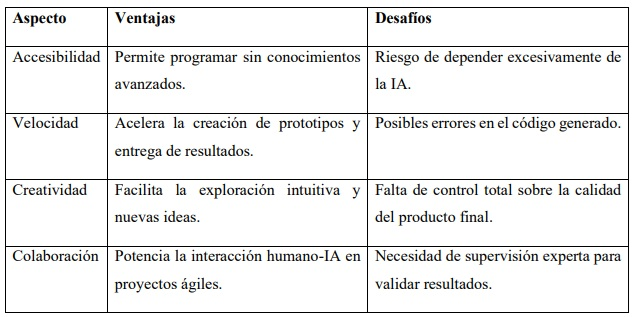

7 Vibe coding: la frontera entre intuición y programación asistida por IA
Palabras clave: Vibe coding, inteligencia artificial, programacion intuitiva, desarrollo ágil, tecnologia.
7.1 Introducción
La forma en que entendemos la programación está cambiando rápidamente. Gracias a la inteligencia artificial generativa, crear software ya no depende únicamente de dominar lenguajes de código, sino de interactuar con asistentes capaces de transformar ideas en aplicaciones. Este fenómeno, conocido como vibe coding, convierte la intuición en una herramienta creativa para el desarrollo tecnológico.[1]
Lo que antes estaba reservado a expertos en informática, hoy comienza a estar al alcance de cualquier persona con una idea y curiosidad.[3] Con el progreso acelerado de la inteligencia artificial generativa, ha surgido un nuevo paradigma en el que programar se convierte en un ciclo de retroalimentación entre un usuario y la IA conversacional.[2]
7.2 Artículo
El término vibe coding se popularizó en febrero de 2025, cuando fue utilizado por primera vez por Andrej Karpathy, cofundador de OpenAI, en referencia a esta forma intuitiva y experimental de crear aplicaciones. [2] A diferencia del enfoque tradicional, donde aprender lenguajes de programación era indispensable, el vibe coding se apoya en la inteligencia artificial para que el usuario interactúe de manera intuitiva, casi como si hablara con un asistente personal.
Lo más llamativo de esta nueva forma de programar es su capacidad para democratizar el acceso a la creación tecnológica. [1] Hoy basta con tener una idea y traducirla en instrucciones simples para que una IA genere aplicaciones funcionales. Este cambio recuerda cómo los lenguajes de alto nivel hicieron más accesible la informática, pero ahora llevado al siguiente nivel.[3]
Este enfoque se adapta perfectamente a los marcos de desarrollo ágil.[2] La premisa de “probar primero y refinar después” permite acelerar la entrega de resultados y fomenta la experimentación.[2]
La inteligencia artificial puede generar código útil, pero también es susceptible a errores o vulnerabilidades de seguridad. ¹ La supervisión humana sigue siendo crucial, ya que el juicio y el contexto que aporta una persona son insustituibles.[1]

Figura 7.1: Ventajas y desafíos del vibe coding.
Como se observa en la Figura 6.1, el vibe coding presenta un balance entre oportunidades y retos que deben ser gestionados cuidadosamente para maximizar su efectividad en el desarrollo de software.
Caso de aplicación Un ejemplo representativo es el artículo publicado en WIRED España, donde se exponen casos de personas sin conocimientos técnicos que lograron crear aplicaciones para resolver problemas cotidianos. [4] Estos casos muestran que el vibe coding no es solo una curiosidad tecnológica, sino un cambio cultural que redefine lo que significa programar en la era de la inteligencia artificial.
7.3 Conclusiones
El desarrollo de ciudades inteligentes constituye una oportunidad estratégica para la transformar la vida urbana en América Latina. Los avances internacionales demuestran que la clave no radica únicamente en la tecnología, sino en su integración con políticas públicas sólidas y con la participación de la ciudadanía. La región debe avanzar con pasos firmes en cinco dimensiones: infraestructura tecnológica, gobernanza, ciberseguridad, sostenibilidad e inclusión social. Adoptar este enfoque permitirá crear un modelo latinoamericano de ciudad inteligente, capaz de responder a sus desafíos estructurales y aprovechar la innovación para mejorar la calidad de vida de millones de ciudadanos.
7.4 Referencias
[1] Harkar, Shalini. “What Is Vibe Coding?” IBM Think, Abril,2025 . Accedido el 22 de agosto de 2025.https://www.ibm.com.
[2] Indiano, Andrea. “Ya se puede crear software sin saber programar.” Campus Technology, Marzo,2025. Accedido el 22 de agosto de 2025. https://es.wired.com
[3] Khan, Tasmiha, y Amanda Downie.”What Is No-Code?“. IBM Think,2025. Accedido el 16 de agosto de 2025. https://www.ibm.com
[4] Kumar, Madhukar.”A Comprehensive Guide to Vibe Coding Tools.”. Medium (Software, AI and Marketing), Marzo,2025. Accedido el 3 de agosto de 2025. https://www.medium.com